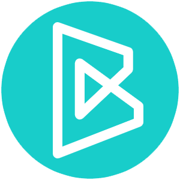

<ion-header class="ion-no-border" [translucent]="true">
  <ion-toolbar>
    
    <ion-buttons mode="md" slot="end" *ngIf="auth">
      <ion-menu-button color="primary"></ion-menu-button>
    </ion-buttons>
    <div class="header">
      
      <ion-title>Blook</ion-title>
    </div>
     
   
  </ion-toolbar>
  
  <div class="button" *ngIf="!auth">
    <ion-button size="small" expand="block" shape="round" fill="outline" color="primary" routerLink="/login"> Entrar </ion-button>
    <ion-button class="inscrever" size="small" expand="block" shape="round" color="primary" routerLink="/cadastro"> Inscreva-se </ion-button>
  </div>
  
</ion-header>